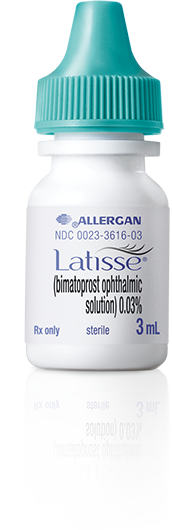
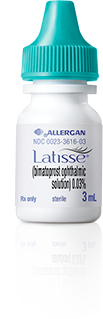
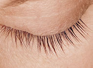
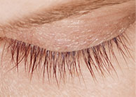
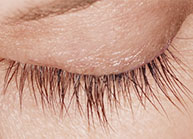
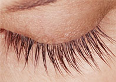
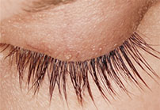
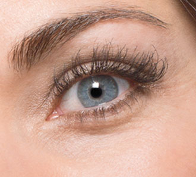

Need Help?
(877) 907-4047Lengthen, thicken, and darken your natural
eyelashes with Shapiro MD Latisse


Showstopper lashes before you know it.
4
WeekLatisse working its magic
for longer lashes
8
WeekThicker and darker
lashes say hello
12
Week Flash a wink at the
mirror to see the results
16
WeekSteal the spotlight with
your incredible lashes

0 week

4 week

8 week

12 week

16 week
The Power of Latisse®
Latisse® is the only FDA- approved treatment for growing longer, fuller, and darker eyelashes. We’ll be with you every step of the way, under the supervision of a board-certified dermatologist.
In the clinical trial, most patients began seeing longer lashes after just four weeks of use, and full results at 16 weeks.

Your lashes won’t be going away. They won’t wash out like mascara, or fall out like fake eyelashes or extensions. They’ll be all-natural and yours.
In a 4-month clinical trial, the vast majority of women
using Latisse saw a significant increase in their
eyelashes prominence
Longer
Fuller
Darker
Go through the simple flow, where
you answer a few questions and
send us some photos of your
eyelashes
Our Board-Certified Dermatologists
will review your case and prescribe
Latisse®
We’ll ship to you discreetly within a
week. Your prescription refills
automatically, so you never run out,
and you can cancel anytime.
Frequently Asked Questions
Latisse is an FDA approved treatment for growing longer, fuller, darker eyelashes.
Latisse is an FDA approved treatment for growing longer, fuller, darker eyelashes.
Latisse is an FDA approved treatment for growing longer, fuller, darker eyelashes.
Latisse is an FDA approved treatment for growing longer, fuller, darker eyelashes.
Latisse is an FDA approved treatment for growing longer, fuller, darker eyelashes.
Latisse is an FDA approved treatment for growing longer, fuller, darker eyelashes.
Latisse is an FDA approved treatment for growing longer, fuller, darker eyelashes.
Latisse is an FDA approved treatment for growing longer, fuller, darker eyelashes.
Latisse is an FDA approved treatment for growing longer, fuller, darker eyelashes.
Latisse is an FDA approved treatment for growing longer, fuller, darker eyelashes.
Latisse is an FDA approved treatment for growing longer, fuller, darker eyelashes.
Latisse is an FDA approved treatment for growing longer, fuller, darker eyelashes.
Latisse is an FDA approved treatment for growing longer, fuller, darker eyelashes.
Latisse is an FDA approved treatment for growing longer, fuller, darker eyelashes.
Latisse is an FDA approved treatment for growing longer, fuller, darker eyelashes.
Latisse is an FDA approved treatment for growing longer, fuller, darker eyelashes.
Latisse is an FDA approved treatment for growing longer, fuller, darker eyelashes.
Latisse is an FDA approved treatment for growing longer, fuller, darker eyelashes.
Latisse is an FDA approved treatment for growing longer, fuller, darker eyelashes.
Latisse is an FDA approved treatment for growing longer, fuller, darker eyelashes.
Latisse is an FDA approved treatment for growing longer, fuller, darker eyelashes.
Latisse is an FDA approved treatment for growing longer, fuller, darker eyelashes.
Latisse is an FDA approved treatment for growing longer, fuller, darker eyelashes.
Latisse is an FDA approved treatment for growing longer, fuller, darker eyelashes.
Latisse is an FDA approved treatment for growing longer, fuller, darker eyelashes.
Latisse is an FDA approved treatment for growing longer, fuller, darker eyelashes.
Latisse is an FDA approved treatment for growing longer, fuller, darker eyelashes.
Latisse is an FDA approved treatment for growing longer, fuller, darker eyelashes.
Latisse is an FDA approved treatment for growing longer, fuller, darker eyelashes.
Latisse is an FDA approved treatment for growing longer, fuller, darker eyelashes.
Every effort has been made to ensure that the information provided is accurate, up-to-date and complete, but no guarantee is made to that effect. In addition, the drug information contained herein may be time sensitive and should not be utilized as a reference resource beyond the date hereof. This material does not endorse drugs, diagnose patients, or recommend therapy. This information is a reference resource designed as supplement to, and not a substitute for, the expertise, skill, knowledge, and judgement of healthcare practitioners in patient care. The absence of a warning for a given drug or combination thereof in no way should be construed to indicate safety, effectiveness, or appropriateness for any given patient. Apostrophe does not assume any responsibility for any aspect of healthcare administered with the aid of materials provided. The information contained herein is not intended to cover all possible uses, directions, precautions, warnings, drug interactions, allergic reactions, or adverse effects. If you have questions about the substances you are taking, check with your doctor, nurse, or pharmacist.
If you have any of these signs of an allergic reaction: hives; difficulty breathing; swelling of your face, lips, tongue, or throat. Stop using Latisse (bimatoprost ophthalmic solution) if you experience severe burning or itching of your eyes, severe redness or swelling in or around your eye, vision problems, eye pain, are seeing halos around lights, oozing or discharge from your eye; or increased sensitivity to light.
The most commonly reported side effects of Latisse (bimatoprost topical solution) are mild eye discomfort, dry or watery eyes, or mild eye-redness or puffy eyelids. Also I think the 4% was limited to the iris darkening not so much the discomfort.
Some less common side effects of Latisse (bimatoprost ophthalmic solution) may occur around the area where Latisse was applied. These side effects include skin darkening, eye irritation, eye dryness, which are reversible in nature. However, 4% of clinical patients experienced gradual change in the colored portion of their iris (this risk was minimized by properly blotting out the excess solution after application) and is believed to be irreversible.
This is not a complete list of side effects and others may occur. Call your doctor for medical advice about side effects. You may report side effects to FDA at
1-800-FDA-1088. Click here for a more complete list of side effects and product information.